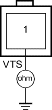
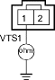

Special Tools Required
- Oil pressure gauge attachment 07NAJ-P070100
- Low pressure gauge 07406-0070001
- Hose oil pressure 07ZAJ-S5A0200
NOTE: Information marked with an asterisk (*) applies to D16W9, D16W8 engines.
- Reset the ECM/PCM (see page 11-168).
- Check the engine oil level, and refill if necessary.
- Start the engine. Hold the engine at 3.000 rpm with no load (in Park or neutral) until the radiator fan comes on.
- Road test the vehicle:
Accelerate in M/T, A/T: 2nd gear (CVT: L position) to an engine speed over 4,000 rpm. Hold that engine speed for at least 2 seconds. If DTC 21 is not repeated during the first road test, repeat this test 2 more times.
Is the MIL on and does it indicated DTC 21?
YES |
- Go to step 5. |
NO |
- Intermittent failure, system is OK at this time. Check for poor connections or loose wires at the VTEC solenoid valve and at the ECM/PCM. |

- Turn the ignition switch OFF.
- Remove the resonator (see page 11-148).
- Turn the ignition switch OFF.
- Disconnect the VTEC solenoid valve 1P (2P)* connector.
- Check for resistance between the VTEC solenoid valve 1P (2P)* connector terminal No. 1 and body ground.


Is there 14-30 ohms?
YES |
- Go to step 10. |
NO |
- Replace the VTEC solenoid valve. |